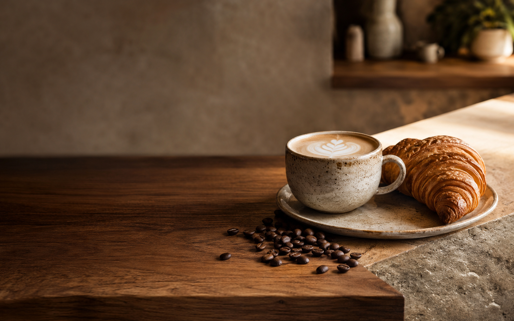

Latte da casa
Espresso duplo, leite cremoso e notas de caramelo.
Grãos selecionados, comida fresca e um cantinho pensado para você desacelerar.

4,9 no GoogleComeçamos com uma máquina, doze xícaras e a vontade de servir café de verdade. Hoje continuamos pequenos por escolha: conhecemos nossos produtores, torramos em lotes curtos e chamamos os clientes pelo nome.
Venha conhecer“O café é ótimo.
A vontade de ficar,
melhor ainda.”— Marina, cliente desde 2019